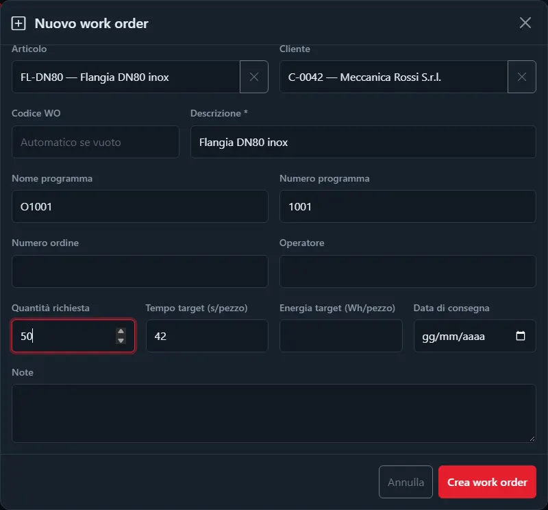
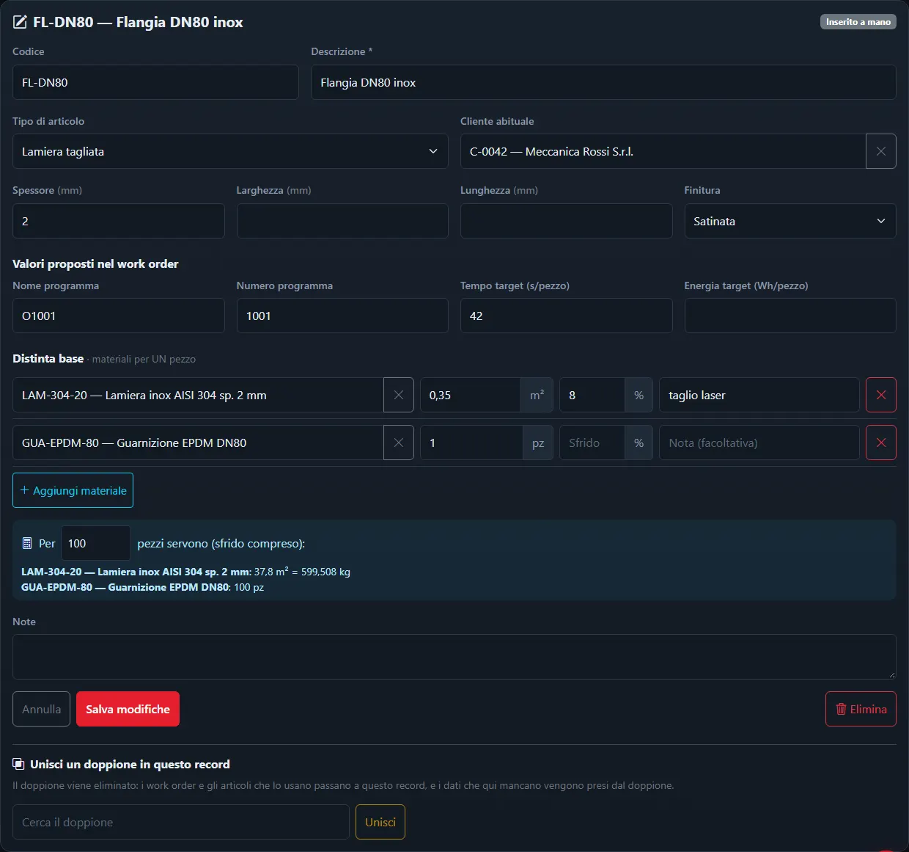
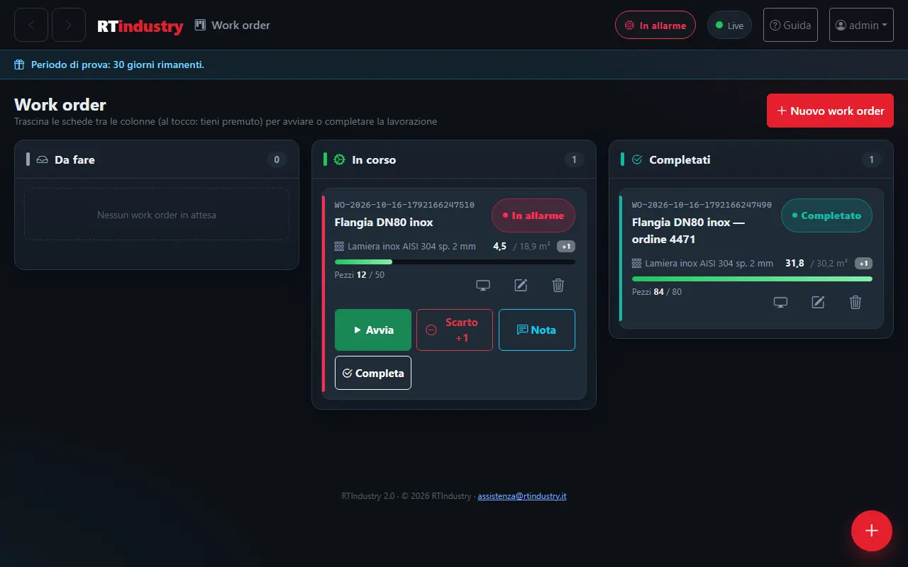
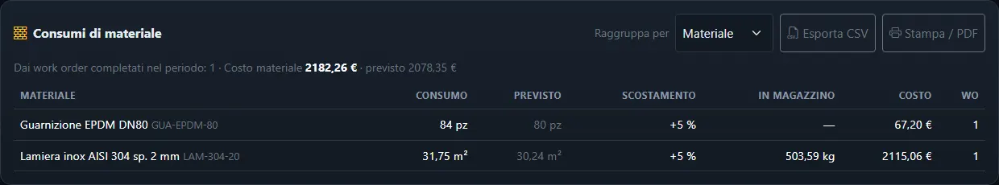
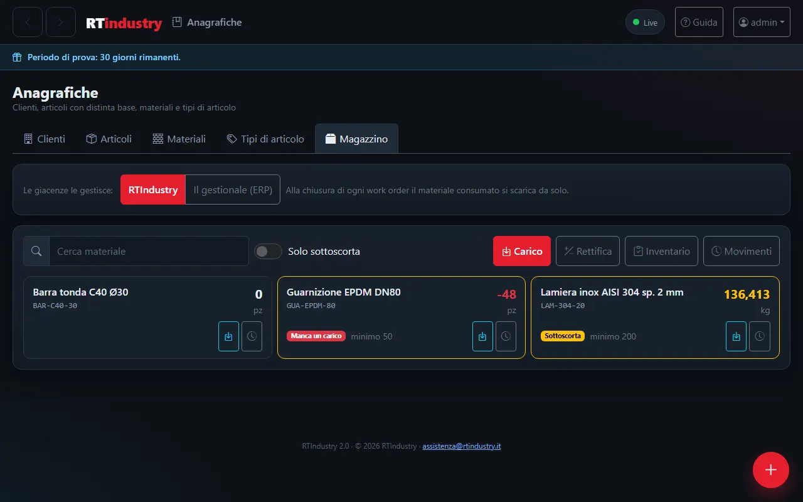
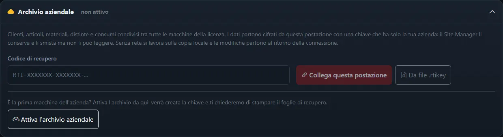

Manuale di RTIndustry
RTIndustry controlla in tempo reale la tua macchina a controllo numerico (CNC) o il tuo PLC: conta i pezzi, misura i tempi e calcola l'efficienza della produzione. In ogni schermata del programma trovi in alto il pulsante ? Guida: ti porta direttamente alla spiegazione di quella schermata.
1Primi passi
Cosa fa RTIndustry e come si usa ogni giorno, in cinque minuti.
- La macchina lavora, RTIndustry registra. Il programma legge dalla macchina lo stato (in lavorazione, in pausa, in allarme…), il contapezzi e, se c'è il contatore di energia, i consumi. Non serve fare nulla: i dati arrivano da soli.
- Il lavoro si organizza in work order (WO). Un work order è una commessa: cosa produrre e quanti pezzi. Si crea nella schermata Work order e si avvia trascinandolo in "In corso". Se la macchina parte senza un work order attivo, RTIndustry ne crea uno automatico ("Lavorazione avviata dalla macchina") per non perdere i pezzi.
- L'operatore usa l'HMI. La schermata HMI macchina è pensata per chi sta a bordo macchina: pezzi fatti, scarti, stato e pulsanti grandi.
- Il responsabile guarda i risultati. Telemetria, OEE, Report, Energia e Allarmi mostrano come sta andando il turno e i periodi passati.
Come si apre
- Doppio clic sull'icona RTIndustry sul desktop, oppure
- clic destro sull'icona di RTIndustry vicino all'orologio di Windows → Apri Dashboard, oppure
- da un altro PC o tablet della rete: indirizzo
http://NOME-O-IP-DEL-PC:1880.
Più macchine sullo stesso PC
Ogni installazione di RTIndustry segue una macchina. Per collegarne altre dallo stesso PC o server si installano più istanze: avviando di nuovo l'installer, scegli Installare una nuova istanza e dai un nome (per esempio Fresa2).
- Ogni istanza ha cartella (
C:\RTIndustry-Fresa2), servizio di Windows (RTIndustry-Fresa2), icona, dati, backup e licenza propri. - L'installer propone porte libere: la prima istanza aggiuntiva risponde su
http://NOME-O-IP-DEL-PC:1890, la seconda su:1900e così via (le vedi nella pagina Avanzate dell'installer). - Il nome dell'istanza compare in alto accanto al logo, nella pagina di accesso e nel titolo della scheda del browser.
- Ogni istanza occupa un posto della licenza: con una licenza da più macchine puoi usare la stessa chiave in tutte.
- Per aggiornarle, avvia l'installer e scegli quale istanza aggiornare; la disinstallazione di un'istanza non tocca le altre.
2Accesso
Ognuno entra con il proprio nome utente e la propria password: ogni operazione resta registrata a suo nome.
- Scrivi Nome utente e Password.
- Premi Accedi. Si apre la schermata dei work order, oppure la pagina che stavi cercando di aprire.
Per uscire: menu con il tuo nome in alto a destra → Esci.
Gli account sono di tre tipi:
| Ruolo | Cosa può fare |
|---|---|
| Operatore | Work order, HMI, telemetria, OEE, report, energia, allarmi, storico. Non vede le Impostazioni. |
| Capo reparto | Come l'operatore, più la gestione delle Anagrafiche (clienti, articoli, materiali, distinte). L'amministratore lo crea o lo assegna in Operatori e registro. |
| Amministratore | Tutto, più Impostazioni, licenza e Operatori e registro. Il suo account si crea nella configurazione guidata. |
Cambiare la propria password: menu con il tuo nome in alto a destra → La mia password. Scrivi la password attuale, poi due volte quella nuova (almeno 8 caratteri).
Troppi tentativi errati: dopo 5 password sbagliate di fila per lo stesso nome utente, l'accesso da quel dispositivo si blocca per 30 secondi; ogni ulteriore errore raddoppia l'attesa, fino a 15 minuti. Gli altri utenti possono continuare ad accedere. Il messaggio sulla pagina indica quanto attendere.
3Configurazione guidata
Compare solo la prima volta, subito dopo l'installazione: in sei passi il programma è pronto.
- Azienda — nome dell'azienda (obbligatorio), stabilimento, reparto, nome della macchina e fuso orario (per l'Italia
Europe/Rome, l'ora legale è automatica). - Macchina — scegli il tipo di collegamento: OPC UA, FANUC, Heidenhain, Modbus TCP oppure Simulatore (dati di prova, senza macchina). Inserisci l'indirizzo IP e premi Prova la connessione: il riquadro verde "Macchina collegata" conferma che stato e pezzi arrivano. Se la macchina è spenta puoi proseguire e riprovare più tardi dalle Impostazioni. Se hai il profilo di una macchina uguale già collegata, premi Importa profilo: indichi solo l'indirizzo IP e la macchina è configurata.
- Turni — orari di inizio e fine di ogni turno (anche turni di notte).
- Licenza — inserisci la chiave (formato
XXXX-XXXX-XXXX-XXXX) e premi Attiva licenza. Senza chiave parte una prova gratuita di 30 giorni. Il riquadro mostra l'esito e i giorni rimanenti. Se l'azienda esce su internet tramite proxy, indicane indirizzo (e, se richiesti, utente e password) in Opzioni avanzate. - Amministratore — nome utente e password (almeno 8 caratteri) del primo amministratore.
- Avvio — controlla il riepilogo e premi Avvia RTIndustry.
5Work order
La bacheca delle commesse: cosa c'è da fare, cosa è in lavorazione, cosa è finito.
Cosa vedi
Tre colonne: Da fare, In corso, Completati. Ogni scheda mostra codice, descrizione, programma, pezzi fatti e, se indicata, la data di consegna (in rosso se scaduta). La scheda in lavorazione si aggiorna da sola mentre la macchina produce.
Creare un work order
- Premi + Nuovo work order.
- Compila almeno la Descrizione. Utili: Quantità richiesta (per l'avanzamento), Tempo target (s/pezzo) (per l'efficienza), Data di consegna, cliente, ordine, codice articolo, programma, operatore, note.
- Premi Salva: il WO compare in "Da fare".
Articolo e cliente in pochi tocchi
Con le Anagrafiche attive, in cima al form ci sono i campi Articolo e Cliente: si scrive una parte del nome o del codice e si sceglie dall'elenco. Appena si apre il form, il campo Articolo mostra gli ultimi articoli usati su questa postazione.
- Tocca + Nuovo work order.
- Tocca l'articolo: descrizione, programma, tempo ciclo e cliente abituale si compilano da soli e il cursore passa alla quantità.
- Scrivi la quantità e tocca Crea work order.
Se il cliente (o l'articolo) non esiste ancora, scrivi il nome e tocca + Nuovo cliente «…» in fondo all'elenco: viene creato al volo con il segno da completare e l'ufficio lo completa dopo, in Anagrafiche.

Distinta congelata. Quando il work order entra in lavorazione, RTIndustry fotografa la distinta base dell'articolo: se poi la distinta cambia, i consumi di questo WO restano calcolati su quella di partenza. Il capo reparto o l'amministratore può aggiornarla con Riallinea all'articolo nella modifica del WO.
Materiale insufficiente. Con il Magazzino attivo, all'avvio del WO compare un avviso se in magazzino non c'è abbastanza materiale per i pezzi ancora da fare. È solo un avviso: la produzione non si blocca.
Avviare, mettere in pausa, completare
- Trascina la scheda nella colonna voluta: in "In corso" parte, in "Completati" si chiude. Su tablet tieni premuta la scheda un istante prima di trascinarla.
- Sulla scheda in corso ci sono i pulsanti rapidi: Pausa/Avvia, Scarto +1, Nota, Completa.
- Le icone sulla scheda aprono l'HMI di quel WO, la modifica o l'eliminazione (con conferma).
Sulle schede con un articolo compare anche il consumo di materiale (vedi Consumi di materiale).
6HMI macchina
La schermata dell'operatore a bordo macchina: grande, leggibile, da usare anche con i guanti su un tablet.
Cosa vedi
- Il work order in lavorazione (o quello scelto dall'elenco in alto), con consegna, turno e stato della macchina.
- L'anello di avanzamento: pezzi buoni rispetto ai pezzi richiesti.
- I tempi del work order: quanto è stato in lavorazione, in pausa, fermo, in allarme, in attrezzaggio, in manutenzione, in pulizia, in rilavorazione, con il totale.
- La torta degli stati della macchina: in che percentuale la macchina è stata in lavoro, in pausa, ferma, in allarme, inattiva o spenta mentre il work order era attivo.
- Il tempo di produzione (macchina in lavoro), il tempo previsto (ciclo target × pezzi fatti), la deviazione (in ritardo in arancione, in anticipo in verde), il ciclo medio e il tempo stimato per finire. Previsto e deviazione compaiono se il work order ha un ciclo target.
- L'eventuale allarme attivo, in evidenza.
Lo stato del work order segue la macchina
Quando la macchina cambia stato, il work order in lavorazione la segue: macchina in lavoro → In lavorazione, pausa → In pausa, fermo → Fermo, allarme → In allarme, attrezzaggio, manutenzione, pulizia e rilavorazione → stesso stato; macchina spenta con il work order in lavorazione → Fermo. Se indichi tu un motivo (per esempio Manutenzione mentre la macchina è ferma), la tua scelta resta finché la macchina non cambia stato. L'amministratore può disattivare questo comportamento in Impostazioni › Mapping stati e modi.
Cosa puoi fare
- Scarti: con + e − registri i pezzi non buoni. I pezzi buoni si aggiornano di conseguenza.
- Pezzi aggiunti: con + e − aggiungi i pezzi fatti che il contapezzi della macchina non ha contato. Si sommano ai pezzi fatti del work order (anche per l'ERP).
- Stato del work order: pulsanti Avvia, Pausa, Ferma, Attrezzaggio, Rilavorazione, Manutenzione, Pulizia, Allarme, Completa. Indicare il motivo di una fermata rende più precisi i report.
- Invia programma alla macchina: si apre la cartella dei part program (il programma del work order è evidenziato in cima). Puoi entrare nelle sottocartelle, cercare, aprire o scaricare un file, caricarne uno dal tuo dispositivo e premere Invia alla macchina: il programma viene copiato nella cartella di rete del CNC oppure, sui controlli Heidenhain, trasferito direttamente al CNC. Funziona da qualsiasi PC o tablet collegato.
- Documenti macchina: apre la cartella dei documenti della macchina (manuali, schede), se configurata.
- Allegati: Allega documento aggiunge al work order disegni, istruzioni o altri file; Scatta foto usa la fotocamera del tablet. Gli allegati si aprono con un tocco e si eliminano premendo due volte il cestino.
- Note: scrivi un'annotazione per il turno successivo e salvala.
7Telemetria
Come sta andando il turno in corso, aggiornato ogni secondo.
- Pezzi / ora: ritmo di produzione del turno.
- Ciclo medio: tempo in lavorazione diviso per i pezzi prodotti.
- OEE: efficienza complessiva del turno (vedi OEE).
- Energia turno: consumo dall'inizio del turno (se c'è il contatore di energia).
- Grafico della potenza dell'ultima ora, ripartizione dei tempi per stato del turno e dettagli CNC (programma, avanzamento, utensile…).
8OEE
L'indicatore internazionale dell'efficienza di una macchina: 100% significa produrre sempre, alla velocità prevista, senza scarti.
OEE = Disponibilità × Efficienza × Qualità
| Fattore | Domanda a cui risponde | Come si migliora |
|---|---|---|
| Disponibilità | Per quanto tempo del turno la macchina ha lavorato? | Ridurre fermi, attrezzaggi lunghi, attese. |
| Efficienza | Ha lavorato alla velocità prevista? | Impostare un tempo target realistico nel WO; ridurre micro-fermate. |
| Qualità | Quanti pezzi sono buoni? | Registrare e ridurre scarti e rilavorazioni. |
La pagina mostra l'OEE del turno (indicatore circolare), i tre fattori, l'andamento settimanale (lunedì → domenica) e il dettaglio per turno della giornata.
9Report
L'analisi di un periodo passato: una settimana, un mese, un turno specifico.
- Scegli periodo e, se vuoi, turno nei filtri in alto.
- Leggi i riepiloghi: OEE medio, Pezzi buoni, Scarti, Energia.
- Sotto trovi l'OEE giorno per giorno, la distribuzione dei tempi (produzione, pausa, inattivo, fermo, allarme, manutenzione, attrezzaggio), l'energia rispetto alla produzione e l'elenco dei work order completati.
- Con Esporta CSV scarichi i dati per Excel.
- In fondo, la sezione Consumi di materiale riassume il materiale consumato dai work order completati nel periodo: vedi Consumi di materiale.
10Energia
Quanto consuma la macchina e quanto costa ogni pezzo. Disponibile se è collegato un contatore di energia.
- In tempo reale: potenza assorbita, energia del turno, energia per pezzo (Wh/pezzo) e costo del turno.
- Storico del periodo: energia e costo totali, media giornaliera, consumo giorno per giorno e andamento dei Wh per pezzo.
Collegare il contatore di energia
In Impostazioni › Contatore di energia (Modbus) scegli il modello del contatore: i campi si compilano da soli e restano modificabili. Per l'IME CE4DT MID (Conto D4) il profilo imposta funzione FC4 (input register), unit ID 5, registro 20592, tipo uint32, ordine ABCD e fattore di scala 100: devi indicare solo l'indirizzo IP. Per altri modelli scegli Personalizzato e copia registro, tipo di dato e ordine dei registri dal manuale del contatore.
Contatore su RS485 con convertitore Ethernet (es. USR-DR302): se il convertitore inoltra i byte così come arrivano (modalità trasparente) scegli il protocollo Modbus RTU su TCP (convertitore RS485) e la porta TCP configurata sul convertitore; se invece il convertitore fa la conversione Modbus TCP → RTU lascia Modbus TCP. Non sai quale? Premi Testa lettura: se il contatore risponde solo con l'altro protocollo, RTIndustry te lo propone con il valore letto e lo applichi con Usa questo protocollo. Velocità, parità e bit di stop della seriale del convertitore devono coincidere con quelli del contatore.
Il fattore di scala trasforma il valore letto in Wh (wattora), l'unità con cui RTIndustry fa tutti i calcoli: contatore che conta in kWh → fattore 1000; in 0,1 kWh (come l'IME) → 100; già in Wh → 1. Premi Testa lettura: il risultato compare in Wh e in kWh e deve coincidere con il totale mostrato sul display del contatore.
11Allarmi
Quanto tempo la macchina è rimasta in allarme e per quali cause.
- Filtri per periodo e turno.
- Riepiloghi: tempo in allarme, giorni con allarmi, percentuale sul tempo macchina, media giornaliera.
- Grafico giornaliero con la linea della media, ripartizione per turno e tabella degli eventi: gli allarmi più lunghi di 5 minuti sono evidenziati.
- Esporta CSV per l'analisi in Excel.
12Storico WO
L'archivio completo di tutti i work order, anche quelli vecchi.
- Cerca per codice, descrizione, cliente, articolo…
- Filtra per stato e ordina cliccando sull'intestazione di una colonna.
- Esporta CSV scarica esattamente l'elenco che stai vedendo.
13Anagrafiche
L'elenco di clienti, articoli, materiali e tipi di articolo dell'azienda, con la distinta base di ogni articolo: di quali materiali è fatto un pezzo e in che quantità.
- Clienti: l'unico dato obbligatorio è il nome. La partita IVA si può scrivere con o senza «IT». La ricerca trova le parole in qualsiasi ordine e ignora maiuscole, accenti e punti: «rossi srl» trova «Meccanica Rossi S.r.l.».
- Materiali: ognuno ha un'unità di consumo (quella della distinta, es. m²) e un'unità di acquisto (quella del magazzino, es. kg). Se sono di grandezze diverse si indica la conversione: «1 m² di questa lamiera = 15,86 kg». Per le lamiere il pulsante Usa calcola i kg per m² da spessore e materiale. Tra unità della stessa grandezza (g e kg, mm e m) la conversione è automatica. Unità disponibili: pz; g, kg, t; mm, m; mm², m²; cm³, dm³, l, m³.
- Tipi di articolo: descrivono la natura dell'articolo con i suoi dati (un pezzo tornito ha diametro e lunghezza, una lamiera spessore e finitura). Ci sono cinque tipi di partenza (Pezzo tornito, Pezzo fresato, Lamiera tagliata, Tubo / profilato, Assieme), modificabili; ogni dato può essere un numero con unità, un testo, una scelta da elenco o un sì/no.
- Articoli: codice, descrizione, tipo con i suoi dati, cliente abituale e i valori proposti nel work order (programma, tempo ciclo, energia). Nella distinta base si indica la quantità di ogni materiale per un pezzo, nell'unità di consumo, con lo sfrido in percentuale; l'anteprima mostra quanto materiale serve, per esempio, per 100 pezzi.
- Da completare: i clienti e gli articoli creati al volo o arrivati da un sistema esterno hanno solo i dati minimi. Il filtro Solo da completare li elenca; salvandoli dal form completo il segno sparisce.
- Doppioni: apri il record da tenere e, in fondo, cerca il doppione e premi Unisci. Il doppione viene eliminato, gli articoli e i work order che lo usano passano al record tenuto e i dati mancanti vengono presi dal doppione.
- Excel: il pulsante CSV esporta l'elenco (e, negli articoli, le distinte) e lo importa. All'importazione RTIndustry controlla prima il file e mostra le righe con errori; poi salva solo quelle valide. Chi ha un codice già presente viene aggiornato.

Dopo l'aggiornamento: clienti e articoli dai work order esistenti
Chi usava già RTIndustry ha i nomi dei clienti e i codici articolo scritti nei work order. All'apertura della pagina un avviso propone Crea e collega: RTIndustry crea un cliente per ogni nome e un articolo per ogni codice (senza doppioni, segnati da completare) e li collega ai work order. Gli stessi comandi sono nel menu CSV › Crea dai work order esistenti. I testi dei work order non cambiano.
File CSV per Excel
La prima riga contiene i nomi delle colonne, così come li esporta RTIndustry: per partire, esporta l'elenco (anche vuoto) e usalo come modello. Le distinte hanno una riga per materiale:
| Articolo | Materiale | Quantità per pezzo | Sfrido % | Nota |
|---|---|---|---|---|
| FL-DN80 | LAM-304-20 | 0,35 | 8 | taglio laser |
| FL-DN80 | GUA-EPDM-80 | 1 | 0 |
14Consumi di materiale
Quanto materiale ha consumato ogni work order e quanto è costato, calcolato dalla distinta base e dai pezzi fatti.
Come si calcola
Pezzi fatti = pezzi del contapezzi + pezzi aggiunti a mano. Gli scarti sono già compresi: la macchina conta ogni pezzo, buono o scartato.
Consumo = quantità per pezzo × pezzi fatti × (1 + sfrido). Poi si converte nell'unità di acquisto e si moltiplica per il costo unitario del materiale.
Dove si vede
- Work order: sulla scheda, il materiale principale con il consumo fatto e quello previsto per tutta la quantità (+1 indica altri materiali).
- HMI: il riquadro Materiale con tutte le righe della distinta e il costo del materiale.
- Storico WO: le colonne Materiale e Costo materiale.
- Report: la sezione Consumi di materiale del periodo, raggruppata per materiale, cliente, articolo, work order o postazione.

Report: reale contro previsto
Per ogni materiale il Report mostra il Previsto (distinta × pezzi richiesti) e lo Scostamento: in arancione quando si è consumato più del 5 % del previsto. Con l'archivio aziendale il report comprende tutte le macchine dell'azienda e si può filtrare o raggruppare per postazione. Esporta CSV scarica i dati per Excel, Stampa / PDF apre una pagina da stampare o salvare in PDF.

I consumi arrivano anche al gestionale: alla chiusura di ogni work order via REST, nella tabella readconsumi e sul topic MQTT {numero di serie}/consumi (dettagli per i tecnici nella documentazione per sviluppatori).
15Magazzino
Le giacenze dei materiali, con i carichi, l'inventario e lo scarico automatico a ogni work order chiuso. Si trova in Anagrafiche › Magazzino, se il modulo è compreso nella licenza.

Chi gestisce le giacenze
- RTIndustry: alla chiusura di ogni work order il materiale consumato si scarica da solo. Se il WO viene riaperto lo scarico si annulla, e alla nuova chiusura si scarica il consumo aggiornato.
- Il gestionale (ERP): RTIndustry calcola e invia i consumi, lo scarico lo fa il gestionale. Così non si scarica due volte.
Carico, rettifica, inventario
- Carico: scegli il materiale, scrivi la quantità e, se vuoi, bolla e lotto. La quantità si può scrivere anche nell'unità di consumo (per esempio in m² per la lamiera): RTIndustry la converte nell'unità di magazzino.
- Rettifica: una correzione con il segno (+ o −), con una nota sul motivo.
- Inventario: stampa il Foglio di conta, conta e scrivi la quantità solo per i materiali contati; RTIndustry registra la differenza con la giacenza calcolata.
- Movimenti: lo storico di carichi, scarichi, storni, rettifiche e inventari, con data, postazione, utente, bolla e lotto.
Consultano tutti; carichi, rettifiche, inventario e scelta del gestore sono del capo reparto e dell'amministratore. Con l'archivio aziendale i movimenti di tutte le macchine si sommano: la giacenza è quella dell'azienda.
16Archivio aziendale
Clienti, articoli, materiali, distinte, consumi e movimenti di magazzino condivisi tra tutte le macchine della licenza. Si attiva in Impostazioni › Archivio aziendale (amministratore).
Neanche noi possiamo leggere i tuoi dati
I dati partono da ogni postazione cifrati con una chiave che ha solo la tua azienda. Il Site Manager li conserva e li smista alle altre macchine, ma non li può leggere: vede solo blocchi illeggibili, la data e il numero di record. Senza rete si lavora sulla copia locale e le modifiche partono al ritorno della connessione; se due persone cambiano campi diversi dello stesso cliente, le modifiche si uniscono.

Prima macchina: attivare
- Premi Attiva l'archivio aziendale: RTIndustry crea la chiave dell'azienda.
- Stampa o salva subito il foglio di recupero (Apri il foglio da stampare): contiene il codice di recupero e un QR. Conservalo come una chiave di casa. Puoi anche scaricare il file della chiave (
.rtikey). - Conferma con Fatto: ho stampato o salvato il foglio.
Altre macchine: collegare
Sulle altre postazioni della stessa licenza, nella stessa sezione, scrivi il codice di recupero (maiuscole, minuscole e trattini non contano) e premi Collega questa postazione, oppure usa Da file .rtikey. Le anagrafiche arrivano subito; i dati che la postazione aveva già si uniscono a quelli dell'azienda.
La nuvola nella barra in alto dice lo stato: sincronizzato, modifiche in attesa, senza rete o errore. Sincronizza ora forza l'invio.
Operazioni avanzate
Si abilitano scrivendo CONFERMO: Cambia la chiave (dopo, le altre postazioni si ricollegano con il nuovo codice), Scollega solo questa postazione, Disattiva per tutta l'azienda (il Site Manager cancella l'archivio dopo 30 giorni; i dati restano su ogni postazione).
17Impostazioni
Tutta la configurazione del programma, riservata all'amministratore. Le modifiche si applicano subito, senza riavviare nulla.
In cima alla pagina c'è l'Autodiagnosi: con Avvia autodiagnosi RTIndustry controlla collegamento alla macchina, licenza e PC e dice cosa fare per ogni problema. Vedi Risoluzione problemi.
In cima c'è lo stato della connessione con la macchina (ONLINE in verde) e il pulsante Testa connessione. Con Prova le modifiche prima di salvare verifichi un nuovo indirizzo o protocollo senza toccare quello in uso.
| Sezione | A cosa serve |
|---|---|
| Macchina e protocollo | Tipo di collegamento (OPC UA, FANUC, Heidenhain, Modbus, Simulatore), indirizzo IP, sicurezza. Cambiando protocollo, la configurazione precedente resta salvata. |
| Variabili macchina | Da dove leggere stato, pezzi, programma, allarmi… (di solito proposte in automatico dal profilo). Accanto a ogni variabile vedi se è assegnata o non assegnata; con Modbus anche se il nome non corrisponde a nessun registro. Le sorgenti si assegnano con un tocco dall'albero OPC UA, dalla tabella dei registri Modbus o dall'elenco Campi letti dalla macchina (FANUC e Heidenhain): ogni variabile dice se è già assegnata a quella sorgente, a un'altra (e quale) o se è libera. |
| Mapping stati e modi · contapezzi | Come tradurre i valori della macchina negli stati di RTIndustry; come contare i pezzi. |
| Contatore di energia (Modbus) | Collegamento al contatore di energia (modello, registro, tipo e ordine, fattore di scala in Wh), con prova di lettura: vedi Collegare il contatore di energia. |
| Turni di lavoro | Orari dei turni. |
| Identità e accesso | Dati dell'azienda e della macchina. |
| Servizi, energia e licenza | Database e backup, prezzo dell'energia, fuso orario, licenza (attivazione e disattivazione), indirizzo del Site Manager e proxy aziendale (se il PC esce su internet tramite proxy). |
| Integrazione work order (ERP, MES) | Ricezione dei work order dal gestionale. Con Censimento automatico nelle anagrafiche i codici cliente e articolo nuovi che arrivano dal gestionale vengono creati da completare; spento, i work order arrivano lo stesso ma restano senza collegamento. |
| Archivio aziendale | Anagrafiche, consumi e magazzino condivisi tra le macchine, cifrati con la chiave dell'azienda: vedi Archivio aziendale. |
| Cartelle e trasferimenti | Cartelle per allegati, part program, documenti macchina e cartella di rete del CNC (dove «Invia alla macchina» copia i programmi); cartella programmi dei controlli Heidenhain. Il pulsante con la cartella la apre nel browser, anche da un altro PC: puoi sfogliarla, aprire e caricare file. Sul PC dove è installato RTIndustry c'è anche Apri in Esplora risorse; dagli altri PC Copia percorso. Per le cartelle di rete usa il percorso completo (\\server\condivisa, non una lettera di unità mappata) e installa il servizio con un utente che vi abbia accesso (installer › Avanzate). |
Dopo le modifiche premi Salva: se hai cambiato il collegamento alla macchina, parte da solo un test di connessione.
Profilo macchina: copiare la configurazione su una macchina uguale
Quando due o più macchine sono dello stesso tipo (stesso costruttore, modello e controllo), la configurazione si fa una volta sola. Sulla macchina già collegata e collaudata, nel riquadro Profilo macchina premi Esporta profilo, dai un nome (per esempio Tornio Mazak QT 200 · FANUC 0i-TF), costruttore, modello, controllo e qualche nota per chi lo userà, poi Scarica il profilo. Il file (.rtiprofilo.json) contiene protocollo, variabili, mapping degli stati, conteggio dei pezzi, regole e contatore di energia, ma nessun indirizzo IP, nessuna password e nessun dato dell'azienda: si può conservare e dare ad altri.
Sull'altra macchina premi Importa profilo, scegli il file, indica l'indirizzo IP della macchina (e del contatore di energia, se c'è: lascialo vuoto se questa macchina non lo ha) e premi Usa questo profilo. Le Impostazioni si compilano: premi Prova le modifiche prima di salvare e poi Salva e applica. Si esporta sempre la configurazione salvata; se la connessione OPC UA è protetta, utente e password vanno inseriti a mano.
Libreria dei profili. Con Libreria si sceglie un profilo pronto senza bisogno del file: il catalogo ufficiale RTIndustry (profili controllati da noi; quelli con il bollino Verificato sul campo sono già stati provati su una macchina vera) e, se il tuo rivenditore ha la libreria privata, i profili del rivenditore, visibili solo alle sue installazioni. Cerca per costruttore, modello o controllo, premi Usa, indica l'indirizzo IP e prosegui come con un file. Serve la licenza attiva e la connessione a internet. Se la tua macchina manca, configurala, esporta il profilo e chiedi al rivenditore o all'assistenza di aggiungerlo.
Come si contano i pezzi
RTIndustry conta i pezzi in uno di questi modi, scelti in Impostazioni › Mapping stati e modi · contapezzi:
- Contapezzi della macchina (consigliato): il programma legge il contatore del controllo (FANUC, SINUMERIK
actParts, variabile OPC UA o registro Modbus). - A fine programma (contapezzi calcolato dal programma): quando la macchina non fornisce un contapezzi, ogni passaggio diretto da In lavorazione a Fine programma vale un pezzo. È il modo predefinito per Heidenhain (fine programma riconosciuta con
M30,M2/M02oEND PGM) e si può attivare su SINUMERIK con il profilo acProg seactPartsresta a 0. Un reset dopo un arresto (programma annullato) non conta. - Contatore nel PLC (Heidenhain): se il programma NC o il PLC tiene un contatore, indica il suo percorso e la password di accesso ai dati; vale come il contapezzi della macchina.
SINUMERIK: il profilo acProg (verificato sul campo) usa i nodi nativi del controllo; il profilo progStatus resta per i controlli che espongono solo quello. Con Riconosci il programma propone da solo il profilo che risponde.
Backup: ogni giorno RTIndustry salva una copia del database nella propria cartella (ultimi 7 giorni più le ultime 4 domeniche). In Servizi, energia e licenza → Copia dei backup su un altro disco o in rete puoi indicare una seconda cartella (per esempio D:\Backup RTIndustry o \\NAS\backup): così, se il disco del PC si guasta, lo storico non si perde. Premi Backup ora: la cartella scritta viene salvata e il messaggio dice dove è stato copiato il backup, oppure perché la copia non è riuscita.
NOME-PC$) oppure il servizio va installato con un account che vi abbia accesso. Se il dubbio resta, usa un secondo disco o una chiavetta sempre collegata.18Operatori e registro
Solo per l'amministratore: account personali degli operatori e registro di tutte le operazioni (chi ha fatto cosa e quando).
Creare l'account di un operatore
- Menu + → Operatori e registro.
- Scrivi Nome utente (es. mario.rossi: lettere, numeri, punto o trattino), Nome e cognome e una Password iniziale di almeno 8 caratteri.
- Premi Crea operatore e comunica la password all'operatore di persona: potrà cambiarla da La mia password.
Gestire gli account
| Pulsante | Effetto |
|---|---|
| Modifica | Cambia nome e cognome o imposta una nuova password (password dimenticata). |
| Disattiva / Riattiva | Sospende l'accesso: l'operatore viene scollegato subito, anche se aveva la pagina aperta. Le sue attività restano nel registro. |
| Elimina | Cancella l'account. Le attività restano nel registro. Per un'assenza temporanea è meglio Disattiva. |
Registro attività
Elenca, dalla più recente, ogni operazione fatta nell'interfaccia: accessi (anche quelli rifiutati per password errata), uscite, creazione, modifica, spostamento, cambio di stato, scarti ed eliminazione dei work order, gestione degli account, salvataggio delle impostazioni. Per ognuna: data e ora, utente, attività, work order e dettagli.
Filtra per periodo (Dal / Al), Utente e tipo di Attività, poi premi Filtra. Esporta CSV scarica le voci filtrate (fino a 1000) in un file che si apre con Excel.
19Stati macchina e work order
| Stato | Significato |
|---|---|
| In lavorazione | La macchina produce. |
| In pausa | Pausa temporanea. |
| Fermo | Macchina ferma. |
| In allarme | Il controllo segnala un allarme (o l'operatore lo indica con il pulsante Allarme): vale sia per la macchina sia per il work order. |
| Inattivo · Finito | Accesa ma senza lavorare; Finito quando il programma è arrivato alla fine (il tempo conta come inattivo). |
| Attrezzaggio · Rilavorazione | Preparazione della macchina; lavorazione di pezzi da rifare. |
| Manutenzione · Pulizia | Fermate programmate. |
| Completato | Work order chiuso. |
| Spenta o non raggiungibile | Nessun dato dalla macchina da oltre 15 secondi: spenta, cavo scollegato o rete assente. |
20Uso su tablet
Dal menu con il tuo nome in alto a destra:
- Modalità tablet (tasti grandi): pulsanti più grandi, adatti al tocco e ai guanti.
- Testo grande: caratteri più leggibili a distanza.
- Schermo sempre acceso e Schermo intero, dove il dispositivo lo consente.
21Icona nell'area di notifica
Vicino all'orologio di Windows c'è l'icona di RTIndustry. Il colore dice subito se è tutto a posto:
- Verde — servizio attivo e licenza valida.
- Gialla — configurazione da completare o avviso (es. licenza in scadenza).
- Rossa — servizio fermo o licenza non attiva.
Con il clic destro: versione installata, stato di servizio e licenza, Apri Dashboard, Impostazioni, Ferma/Riavvia servizio, Mostra log.
Con più istanze sullo stesso PC ci sono più icone, una per istanza: il nome dell'istanza compare nel menu e nel suggerimento al passaggio del mouse (per esempio RTIndustry Fresa2). L'icona serve anche ad aprire le cartelle di allegati e programmi dalle Impostazioni: se è chiusa, la riapre il prossimo accesso a Windows.
22Licenza e messaggi
La licenza si verifica via internet con il Site Manager e si gestisce da Impostazioni (solo amministratore). Se la licenza non è attiva, gli operatori vedono la pagina Servizio sospeso e devono rivolgersi all'amministratore.
Se la connessione manca, RTIndustry continua a lavorare normalmente e riprova da solo: la licenza resta valida per alcuni giorni anche senza internet (avviso funzionamento offline temporaneo), poi serve di nuovo il collegamento.
Più macchine
Ogni installazione (istanza) occupa un posto della licenza. Con 8 macchine servono 8 posti: di solito una sola chiave con 8 posti, inserita in tutte le istanze. Il Site Manager mostra quanti posti sono usati.
Moduli della licenza
Alcune funzioni sono moduli che la licenza può comprendere o no: Anagrafiche (con distinta base e consumi), Archivio aziendale e Magazzino. Li imposta il rivenditore. Se un modulo non è compreso, la sua voce non compare e chi prova a usarlo vede «Il modulo … non è compreso nella licenza»; i dati già inseriti non si cancellano e tornano visibili quando il modulo viene riattivato. Senza Anagrafiche i work order si creano come prima, con i campi di testo, e quelli dal gestionale continuano ad arrivare.
Spostare la licenza su un altro PC
Sul PC vecchio: Impostazioni › Servizi, energia e licenza › Disattiva (libera il posto). Sul PC nuovo: installa RTIndustry e inserisci la stessa chiave nella configurazione guidata. Se il PC vecchio non funziona più, chiedi all'assistenza di liberare il posto.
| Messaggio | Cosa fare |
|---|---|
| Periodo di prova: N giorni rimanenti | Nulla. Per continuare dopo la prova, l'amministratore inserisce una chiave in Impostazioni. |
| La licenza scade tra N giorni | Contatta il fornitore per il rinnovo. |
| Site Manager non raggiungibile: funzionamento offline temporaneo | Controlla la connessione a internet del PC. Se l'azienda usa un proxy, indicalo in Impostazioni › Servizi, energia e licenza. Il lavoro non si ferma. |
| Licenza scaduta: interfaccia in sola lettura | I dati si vedono ma non si modificano. Rinnova entro 30 giorni. |
| Posti della licenza esauriti | La chiave è già in uso su un altro PC: disattivala lì (Impostazioni › Licenza) o richiedi un posto aggiuntivo. |
| Installazione disattivata / Nessuna licenza attiva | Inserisci la chiave in Impostazioni › Servizi, energia e licenza. |
| Orologio di sistema incoerente | Correggi data e ora di Windows. |
23Requisiti, rete e antivirus
Il PC di RTIndustry
- Windows 10 (1809 o successivo) o Windows 11 a 64 bit, 4 GB di RAM, 10 GB liberi; per più istanze sullo stesso PC conta circa 100 MB di RAM in più per ogni macchina (da 6 macchine in su consigliati 8 GB).
- Sempre acceso: sospensione = Mai (con il PC sospeso i dati non si raccolgono); aggiornamenti di Windows fuori dai turni.
- Data e ora corrette (turni, report e licenza dipendono dall'orologio).
- Collegato in rete sia alle macchine sia ai tablet o PC da cui si consulta la dashboard; internet (HTTPS verso
licenze.rtindustry.it) per la licenza.
Porte di rete
| Porta | Uso |
|---|---|
1880 | Dashboard (browser dei tablet e dei PC). Le istanze aggiuntive usano 1890, 1900… (vedi Più macchine sullo stesso PC). |
1883 | MQTT per i sistemi aziendali (ERP, MES); istanze aggiuntive 1893, 1903… |
| verso le macchine | FANUC 8193, OPC UA 4840, Heidenhain 19000, Modbus 502 (contatore di energia compreso). |
L'installazione apre da sola queste porte nel firewall di Windows.
Antivirus con firewall proprio (Avast, AVG, Kaspersky, ESET, Bitdefender, Norton…)
Molti antivirus a pagamento (e le versioni di prova) sostituiscono il firewall di Windows: le regole aperte dall'installazione non valgono e i tablet non raggiungono la dashboard, anche se sul PC si apre normalmente. Alcuni segnalano per errore l'icona RTIndustryTray.exe come sospetta (falso positivo: è un programma nuovo e non ancora conosciuto dall'antivirus).
Nelle impostazioni dell'antivirus:
- Eccezioni / esclusioni: aggiungi la cartella
C:\RTIndustry(eC:\RTIndustry-…di ogni istanza). - Firewall: consenti le connessioni in ingresso al programma
C:\RTIndustry\node\node.exe(uno per istanza), oppure imposta la rete dell'officina come privata/attendibile. - Se l'icona è stata messa in quarantena, ripristinala dalla quarantena dell'antivirus e riavvia il PC.
Server e PC aziendali con protezione centralizzata (EDR come Cortex XDR, CrowdStrike, SentinelOne, Microsoft Defender for Endpoint): spesso l'icona RTIndustryTray.exe viene cancellata senza avvisi subito dopo l'installazione e non compare più. L'Autodiagnosi lo segnala («Icona nell'area di notifica»). Chiedi al reparto IT di escludere le cartelle di RTIndustry, poi reinstalla scegliendo «aggiorna»: dati e impostazioni restano.
http://NOME-O-IP-DEL-PC:1880. Lo strumento C:\RTIndustry\strumenti\Verifica-RTIndustry.bat segnala se sul PC c'è un firewall di terze parti.24Problemi frequenti
La macchina risulta "Spenta o non raggiungibile"
- Verifica che la macchina sia accesa e il cavo di rete collegato.
- In Impostazioni premi Testa connessione: il messaggio indica cosa non va (indirizzo, porta, credenziali).
I pezzi non aumentano
- Controlla che ci sia un work order In corso e che la macchina sia In lavorazione.
- In Impostazioni › Mapping stati e modi · contapezzi verifica la variabile del contapezzi.
- Se il contapezzi della macchina resta fermo (per esempio a 0), attiva il conteggio a fine programma: vedi Come si contano i pezzi.
La pagina non si apre
- Guarda l'icona nell'area di notifica: se è rossa, clic destro → Riavvia servizio.
- Da un altro PC: verifica di usare l'indirizzo giusto e la porta
1880(istanze aggiuntive:1890,1900…).
Dal PC la dashboard si apre, dai tablet no
- Quasi sempre è il firewall dell'antivirus: vedi Antivirus con firewall proprio.
- Verifica che tablet e PC siano sulla stessa rete (o che la rete aziendale permetta il collegamento).
L'antivirus segnala RTIndustry
- È un falso positivo: aggiungi le eccezioni descritte in Antivirus con firewall proprio e ripristina il file dalla quarantena. La raccolta dati (servizio) continua anche senza l'icona.
In Impostazioni compare l'avviso "Cicli brevi"
- Con il conteggio a fine programma alcuni pezzi possono sfuggire perché il ciclo è più breve di tre letture: usa il contapezzi della macchina o un contatore nel PLC (vedi Come si contano i pezzi).
I consumi sembrano 10, 100 o 1000 volte sbagliati
- Il fattore di scala del contatore di energia non è giusto: il valore deve risultare in Wh. Vedi Collegare il contatore di energia e confronta la lettura con il display del contatore.
Codici di errore
| Codice | Significato e soluzione |
|---|---|
RTI-E001 | Il programma non si avvia su questo PC (cartella copiata da un altro PC, oppure nome del PC o Windows reinstallato). Reinstalla RTIndustry: i dati vengono conservati. |
RTI-E011 | La porta 1880 è occupata da un altro programma (per esempio la versione precedente). Chiudi l'altro programma o cambia porta. |
RTI-E020 / E021 | Problema del database. Contatta l'assistenza: esistono backup automatici giornalieri. |
RTI-E030 | Identità dell'installazione non leggibile: va riattivata la licenza. In Impostazioni › Licenza e Site Manager inserisci la tua chiave (anche la stessa di prima) e premi «Attiva», con il Site Manager raggiungibile; poi reinserisci le password salvate (OPC UA, MySQL, Heidenhain, proxy). |
RTI-E004 | Identificativi del PC non leggibili in questo momento: il servizio riparte da solo. Se si ripete, riavvia il PC. |
25Risoluzione problemi (Autodiagnosi)
Prima di chiamare l'assistenza: Impostazioni › Avvia autodiagnosi (in cima alla pagina, solo amministratore). In meno di un minuto RTIndustry controlla il collegamento alla macchina, la licenza e il PC e, per ogni punto, dice cosa ha verificato e cosa fare.
Ogni controllo ha un semaforo: verde superato, giallo funziona ma va sistemato, rosso problema, grigio non verificato (prima va risolto un problema sopra). Segui i controlli rossi dall'alto verso il basso: spesso, risolto il primo, si sistemano anche gli altri. Il pulsante Guida accanto a un controllo apre la voce corrispondente qui sotto.
Indirizzo della macchina
Verifica che l'indirizzo della macchina sia indicato e, se è un nome, che la rete lo riconosca.
- Indirizzo mancante: in Macchina e protocollo scrivi l'indirizzo IP del controllo (si legge nelle impostazioni di rete del CNC o del PLC) e salva.
- Nome non riconosciuto: usa direttamente l'indirizzo IP (per esempio
192.168.1.50).
Collegamento di rete alla macchina
Il PC prova ad aprire la porta del protocollo: OPC UA 4840, Modbus TCP 502, FANUC FOCAS 8193, Heidenhain DNC 19000 (o quella impostata).
- Nessuna risposta: la macchina è spenta, il cavo è scollegato, l'indirizzo è sbagliato o PC e macchina sono su reti diverse. Accendi la macchina, controlla cavo e spie della presa, confronta l'indirizzo con quello del controllo; il PC deve avere un indirizzo della stessa rete (per esempio entrambi
192.168.1.x). - Porta chiusa: il PC arriva alla macchina, ma il servizio di comunicazione del controllo non è attivo o usa un'altra porta. Sul controllo verifica l'opzione (FOCAS Ethernet, server OPC UA, DNC/Remo Tools, Modbus TCP) e la porta. Dopo l'accensione alcuni controlli impiegano un paio di minuti ad attivarla.
Componente di collegamento al CNC
Solo FANUC e Heidenhain: RTIndustry usa un piccolo programma che dialoga con il CNC. Se manca, quasi sempre lo ha messo in quarantena l'antivirus: ripristinalo e aggiungi l'eccezione per C:\RTIndustry (vedi Antivirus con firewall proprio). Altrimenti reinstalla RTIndustry: i dati vengono conservati.
Sicurezza OPC UA (certificato e accesso)
- Certificato rifiutato: scarica il certificato di RTIndustry con i pulsanti dell'autodiagnosi (PEM o DER) e fallo approvare sul controllo, spostandolo da rifiutati ad attendibili nell'elenco dei certificati del server OPC UA. Poi ripeti la verifica: il collegamento riparte da solo.
- Utente o password non accettati: verificali con chi gestisce il controllo e reinseriscili in Macchina e protocollo › Sicurezza OPC UA.
- Collegamento non completato: Security mode e Security policy devono essere tra quelle offerte dalla macchina; prova Riconosci il tipo di controllo nell'esploratore dei nodi.
Lettura delle variabili
Legge le variabili configurate (stato, modo, contapezzi, programma, allarmi…).
- Nessuna variabile letta: il profilo non corrisponde a questo controllo. Premi Ripristina preset (con OPC UA prova Riconosci il tipo di controllo) e poi Prova le modifiche prima di salvare.
- Alcune variabili non lette: hanno un indirizzo sbagliato o non esistono su questo controllo; correggile in Variabili macchina. Le più importanti sono stato macchina e contapezzi.
Stato della macchina
Controlla che il valore di stato inviato dal controllo sia nella tabella degli stati. Se compare stato non riconosciuto, in Mapping stati e modi · contapezzi aggiungi una riga con il valore mostrato e lo stato giusto (per esempio RUNNING se la macchina sta lavorando). Vedi anche Stati macchina e work order.
Contapezzi
- Contapezzi non letto: indica la variabile del contapezzi in Variabili macchina, oppure attiva il conteggio a fine programma (vedi Come si contano i pezzi).
- Valore non valido (testo, numero negativo): la variabile punta al dato sbagliato; con Modbus controlla tipo e ordine del registro.
Dati ricevuti dal servizio
Dice da quanto tempo il servizio non riceve dati dalla macchina. Oltre un minuto senza dati la macchina risulta Spenta o non raggiungibile. Se la macchina è accesa segui i controlli rossi sopra; se sono tutti verdi premi Salva nelle Impostazioni per far ripartire il collegamento. Dati lenti o a intermittenza indicano di solito una rete instabile (cavo, switch).
Contatore di energia
Solo se il contatore è attivo. Se non risponde, controlla alimentazione e cavo del contatore e, in Contatore di energia (Modbus), indirizzo, porta, unit ID e registro con Testa lettura (vedi Collegare il contatore di energia).
Licenza
Mostra lo stato della licenza: in prova, in scadenza, scaduta (sola lettura), bloccata o assente. Per attivare o riconvalidare usa Servizi, energia e licenza (Riconvalida ora); vedi Licenza e messaggi.
Collegamento al Site Manager (licenze)
RTIndustry verifica la licenza via internet. Se il Site Manager non risponde la licenza resta valida per alcuni giorni, poi la raccolta si blocca. Verifica che il PC navighi; se l'azienda usa un proxy indicalo in Servizi, energia e licenza › Proxy aziendale; chiedi all'IT di consentire l'HTTPS (porta 443) verso licenze.rtindustry.it.
Data, ora e fuso orario
Un orologio che torna indietro o un fuso diverso da quello delle Impostazioni falsano turni e report e possono bloccare la licenza. Correggi data e ora di Windows, attiva Imposta ora automaticamente e usa lo stesso fuso in Windows e in Servizi, energia e licenza › Fuso orario.
Spazio su disco
Sotto 5 GB liberi compare un avviso, sotto 1 GB un problema: con il disco pieno database e backup si bloccano. Libera spazio (file temporanei, download, vecchi file).
Backup del database
Controlla che il backup giornaliero sia recente e che l'eventuale copia su un altro disco o in rete riesca. Premi Backup ora in Servizi, energia e licenza; per la copia in rete leggi la nota sui permessi in Impostazioni.
26Glossario
| WO (work order) | Commessa di lavoro: cosa produrre e in che quantità. |
| OEE | Overall Equipment Effectiveness, efficienza complessiva della macchina. |
| HMI | Human Machine Interface, la schermata dell'operatore. |
| CNC | Controllo numerico computerizzato della macchina utensile. |
| PLC | Controllore logico programmabile. |
| Tempo ciclo | Tempo per produrre un pezzo. |
| Tempo target | Tempo ciclo previsto, indicato nel work order. |
| Site Manager | Servizio online del fornitore che gestisce le licenze. |
| ERP / MES | Gestionale aziendale / sistema di gestione della produzione. |
| CSV | File di dati apribile con Excel. |
| Istanza | Una installazione di RTIndustry dedicata a una macchina; su un PC possono convivere più istanze. |
| Contapezzi | Contatore dei pezzi: quello del controllo della macchina, oppure calcolato da RTIndustry a fine programma. |
| Contatore di energia | Strumento elettrico che misura i consumi della macchina, letto via Modbus TCP. |
| Wh / kWh | Wattora / chilowattora (1 kWh = 1000 Wh), unità dell'energia consumata. |
| Part program | Programma di lavorazione eseguito dalla macchina utensile. |
| Distinta base | Elenco dei materiali che servono per fare un pezzo, con le quantità. |
| Sfrido | Materiale perso in lavorazione (ritagli, trucioli), in percentuale. |
| Unità di consumo / di acquisto | L'unità della distinta (es. m²) e quella con cui il materiale si compra e si tiene in magazzino (es. kg). |
| Giacenza | Quantità di un materiale presente in magazzino. |
| Codice di recupero | Il codice che contiene la chiave dell'archivio aziendale: serve per collegare le macchine e per recuperare i dati. |
27Assistenza
Prima di scrivere, esegui l'Autodiagnosi: risolve da sola la maggior parte dei casi (macchina spenta o non raggiungibile, certificato, licenza, disco).
Per dubbi o problemi contatta il tecnico o il rivenditore che ha installato RTIndustry, oppure scrivi a assistenza@rtindustry.it.
Quando chiedi assistenza, allega il file della diagnostica: Impostazioni › pulsante Esporta diagnostica in alto. Contiene versione, stato del programma e ultimi messaggi di funzionamento, senza password.
Se il programma non si apre, allega invece la pagella di C:\RTIndustry\strumenti\Verifica-RTIndustry.bat (doppio clic: controlla PC, rete e collegamento alla macchina).